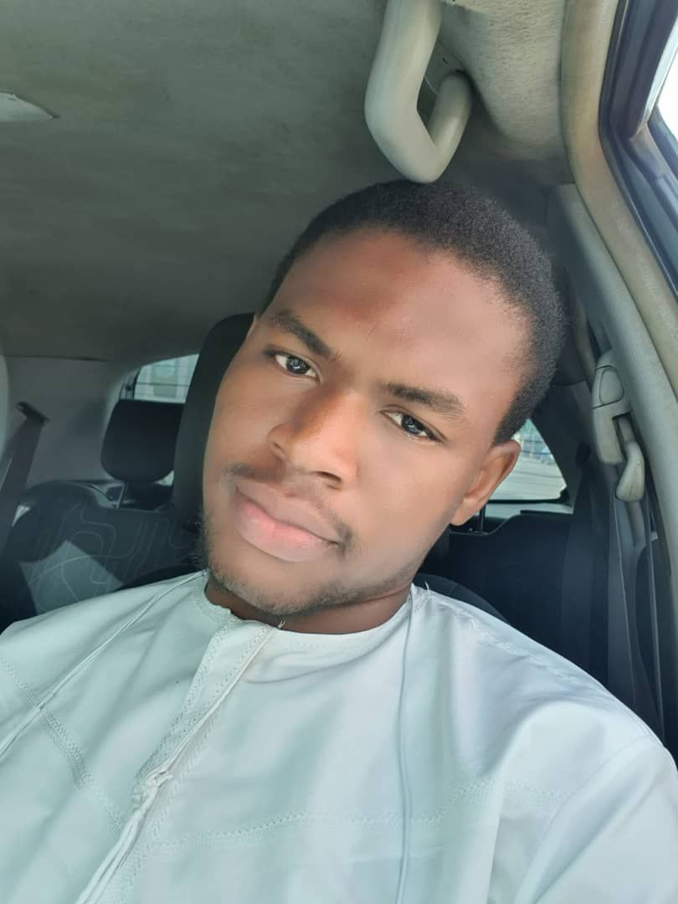

I am Abubakar-Siddiq Rafiq, a second year Bachelor of Science in Information Technology , who is passionate about technology. I have interest in programming, of which my favorite language is C++ but I have considerable knowledge in Java and Python. I am a graphic designer and a learner in Cisco packet tracer.
